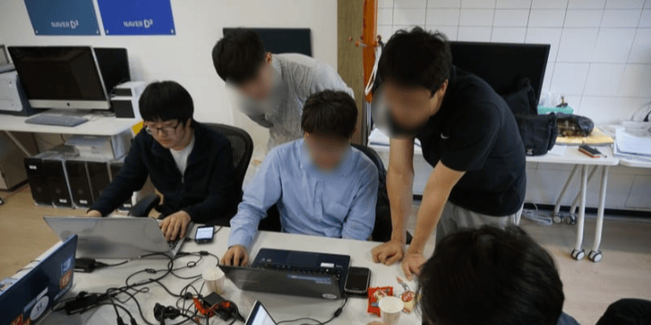

@nemorize Ji Yong, Kim
Email:
jiyong.kim@headercat.com
Tel:
+82 10-5954-2048
소프트웨어, 하드웨어, 디자인, 마케팅 등 분야를 가리지 않고 문제를 해결하는 것에 집중합니다. 각자가 경험하는 문제점을 파악하고, 이를 자연스럽게 해결할 솔루션을 만드는 사람. 그것이 나를 제일 잘 설명하는 표현입니다.
새로운 내용
게시글
- 한국 IT의 갈라파고스화, 그리고 한컴오피스
- 카페인 섭취와 인슐린 저항성간의 상관 관계
- 블로그를 뭔가 이상하게 리뉴얼했다
- PHP 해주세요!
- 나는 Lunar New Year보다는 CNY에 동의한다
짧은글
내 정보
취미
- 맛있는 음식을 먹고, 요리하는 것을 좋아합니다. (그러나 건강상의 문제로 잘 먹지 못합니다.)
- 웹소설을 좋아합니다. 장르를 가리지 않지만, 비지시즌에는 가벼운 작품 위주로 찾아봅니다.
- 귀여운 고양이 구리와 함께하고 있습니다. 사진첩에서 구리를 만나볼 수 있습니다.
음악
- 시끄럽지 않은 노래를 좋아합니다. 잔잔하거나, 신나더라도 절제된 노래를 주로 듣습니다.
- JPOP, KPOP, POP 순서로 자주 듣습니다. 한번 꽂힌 곡은 몇주씩 반복해 듣습니다. 최근 아래 곡들을 특히 자주 듣습니다.
- 全力少年 - SUKIMASWITCH
- 恋におちて-Fall in love- - 小林明子
- 創聖のアクエリオン - AKINO
건강
- 2형 당뇨가 있습니다. 맛있는 음식을 정말 좋아하지만, 건강한 식단을 유지하고 음주를 최소화하고 있습니다.
지역
- 울산광역시에서 태어나 울산에서 학창시절을 보냈고, 울산에서 상근예비역으로 군 복무했습니다.
- 이후 2025년 현재 여자친구와 함께하기 위해 약 5년째 광주광역시에 거주하고 있습니다.
언어
- 한국어가 모국어입니다. 영어와 일본어를 듣고, 읽고, 쓸 수 있습니다.
- PHP와 Typescript를 자주 사용합니다. 필요에 따라 Go, Kotlin, Swift를 함께 사용합니다.
- 들여쓰기로 블럭을 구분하는 Python과 그 유사 문법의 언어들을 좋아하지 않습니다. 꼭 필요한 상황이 아닌 이상 사용하지 않습니다.
- 더 이상 Ruby를 사용하지 않지만, 알만툴(RPG Maker XP)에서 처음 접한 Ruby에 꽤 좋은 기억을 가지고 있습니다.
포트폴리오
2025년
- KustomKey - 커스텀 키보드 빌드 커뮤니티 (웹사이트)
- 모드실용음악학원 - 전남권 최대 규모 실용음악학원 (웹사이트, 브랜딩, 디자인)
- 모드 예약관리시스템 - 실시간 시설 예약 및 관리 시스템 (웹사이트, 디자인)
- 로즈캐슬 PoS - 실시간 시설 및 상담 예약 및 결제, 고객 적립 관리 시스템 (웹사이트, 하드웨어, 디자인)
- 오늘*** v2 - 임직원간 원활한 소통 목적의 사내 커뮤니티 (모바일앱)
2024년
- 페이지투 - 남성 동성애 문화 증진 커뮤니티 (모바일앱, 웹사이트, 디자인 일부)
- 스코어팩토리 - AI 기반 아이엘츠 시험 훈련 서비스 (웹사이트 일부)
- 에스*** - 사내 기프티콘 선물 서비스 (모바일앱)
- 충남*** - 협회 회원 관리 및 비상연락망 구축 시스템 (모바일앱, 하드웨어)
- 유한*** - 산업 안전 설비 제조 및 유통 기업 공식 웹사이트 (웹사이트, 디자인, 브랜딩)
2023년
- 소리북스 - 도서 판매 오픈 마켓 (웹사이트 일부)
- 애드메시지 - 전자동 광고 타게팅 및 배포 시스템 (웹사이트)
- KRARETEM - 실시간 예약 및 견적 접수 및 관리 시스템 (웹사이트)
- 오늘*** - 임직원간 원활한 소통을 목적으로 한 사내 커뮤니티 (모바일앱, 웹사이트, 디자인 일부)
- 보람*** - 임직원 복지용 사내 자판기 (모바일앱, 하드웨어, 디자인)
2022년
- zxcv.be - 외우기 쉽고, 입력하기 쉬운 단축 주소 서비스 (웹사이트, 디자인)
- x86.co.kr - 해킨토시 관련 지식 공유 커뮤니티 (웹사이트 일부)
- 바른뉴트리 - 개인화 영양제 추천 서비스 (웹사이트 일부)
- 홍익3000 - 동물의약품 입출납 관리 시스템 (웹사이트 일부, 디자인)
- 비미르스튜디오 - 크리에이티브 디렉션 및 컨설팅 기업 공식 웹사이트 (웹사이트)
- 에스다이어리 - 개인화 일정 관리 및 라이프스타일 제휴 서비스 (모바일앱)
2021년
- 큐로플주식회사 - 웹/모바일/디자인/브랜딩/하드웨어 등 턴키 SI 에이전시 (대표)
- 디알무비 - 애니메이션 기획 및 제작 기업 공식 웹사이트 (웹사이트, 디자인 일부)
- BlueVelvet - 성인 여성 동성애 커뮤니티 (모바일앱, 웹사이트)
- 애드뉴 - 전자동 백링크 관리 및 SEO 최적화 서비스 (웹사이트, 디자인)
- B1PLACE - 디지털 기반 사진 및 영상 컨텐츠 제작 기업 공식 웹사이트 (웹사이트)
- 이치코퍼레이션 - F&B 브랜딩 기업 공식 웹사이트 (웹사이트)
- 성동*** - 지자체 자치 공동체 공식 웹사이트 (모바일앱, 웹사이트, 디자인)
- 전남*** - 대학 연구소 공식 웹사이트 및 인트라넷 (웹사이트 일부)
2020년
- 한마포 - 한국 최대 마인크래프트 커뮤니티 (웹사이트 일부)
- 팀파랑새 - 일본 애니메이션 OST 커버 프로젝트 팀 공식 웹사이트 (웹사이트 일부)
- 웹스택 - 웹사이트 제작 전문 개인 웹 에이전시 (대표)
- 일본수리문학회 인트라넷 - 논리적 문학을 연구하는 학회의 인트라넷 (웹사이트, 디자인)
- 영디*** - 음향 및 영상 기기 스펙트럼 분석 시스템 (웹사이트, 하드웨어)
2018년
- 어미새 - 패션 핫딜 정보 공유 커뮤니티 (웹사이트 일부, 디자인 일부)
- 스터디포어스 - PHP 무료 웹호스팅 서비스 및 커뮤니티 (웹사이트 일부, 운영관리 일부)
- 스레딕 - 포럼 게시판 형태의 익명 커뮤니티 (안드로이드앱)
2017년
- TVChat - 동일 TV 시청자간 채팅 소통 서비스 (웹사이트 일부)
- 오늘뭐먹지 - 맛집 추천형 배달 및 포장 중계 서비스 (웹사이트)
- 상산고등학교 블로그 - 상산고등학교 공식 블로그 (웹사이트, 디자인)
2015년
- **엔진 - 비주얼 노벨 게임 제작 엔진 (윈도우즈앱 일부, 모바일앱 일부)
- 유머러스케이알 - 유머 게시글 위주 커뮤니티 (웹사이트)
- 크립토기어 - 비트코인 온라인 결제 게이트웨이 (웹사이트, 디자인)
- 오로라프레임워크 - 웹사이트를 모바일앱으로 자동 변환하는 서비스 (웹사이트, 디자인)
2014년
- 사단법21세울산공동체운동 - 울산 공동체 사회 운동 주도 사단법인 공식 웹사이트 (웹사이트, 디자인)
- 깃박스 - GitHub 대체 Git 호스팅 서비스 (웹사이트, 디자인)
- 구름달스튜디오 - 2D 인디 게임 제작 스튜디오 (윈도우즈앱, 웹사이트, 디자인 일부)
2013년
- 소셜 유져 인터페이스 - 소통 위주의 윈도우즈 배경화면 위젯 프로그램 (윈도우즈앱, 디자인)
- CentMMO - DX9 기반 2D 4방향 탑다운 MMORPG 게임 제작 엔진 (윈도우즈앱, 디자인)
- 프렌드쉽 - 사회 커뮤니티 활동을 통한 포인트 적립 서비스 (웹사이트)